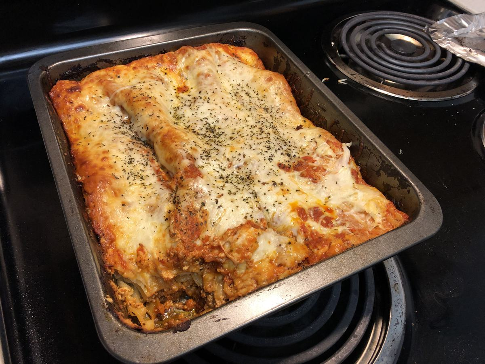

Based on https://www.delish.com/cooking/recipe-ideas/recipes/a51337/classic-lasagna-recipe/
Personal rating: 3 / 5

1/4 cup freshly grated Parmesan
1/4 cup chopped parsley
On med-high heat, cook the meat (ground beef or spinach), breaking into small pieces with a wooden spoon until no longer pink
If the noodles need to be boiled, prep boiling water and cook for only ~2 minutes until very al dente. May need to coat with a small amount of olive oil to prevent sticking
Pre-heat oven to 375
Drain and paper towel off any excess fat. In the same pan, add garlic, spices (oregano, basil, salt, and pepper), and 1 jar of marinara sauce (save the rest)
In a mixing bowl, combine the ricotta, Parmesan, and parsley. Season with salt and pepper
In a large casserole dish, spread thin layers of meat sauce/noodles/ricotta mix/sliced mozzarella. Repeat about 4 times until all of the noodles are used (ricotta should finish on n-1 layers). If needed, add additional marinara sauce
Top last layer of noodles with meat sauce, then Parmesan and mozzarella
Cover with foil and bake for 15 minutes. Increase to 400 and bake uncovered for 20 min - *see notes for aluminum pans
Garnish with parsley and basil